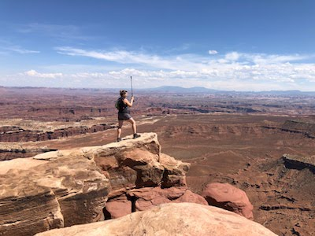
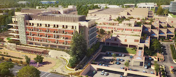
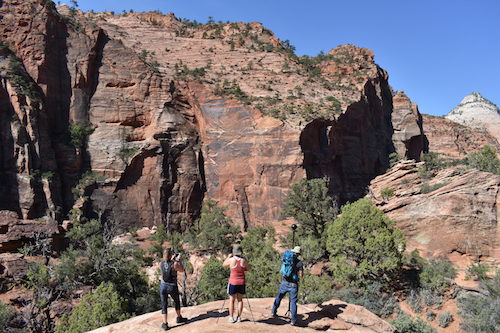

Filming VR panoramas
The LABScI Imagine project is a collaboration between the Stanford University
LABScI program and the
University of Cambridge Department of Computer Science
and Technology, which aims to use cutting edge technology to facilitate
learning in non-standard classroom environments.
The goal of the project is to create a Virtual Reality Field Trip Program for
students with limited resources, including hospitalised paediatric patients or
those otherwise unable to experience nature firsthand. In the summer of 2018,
we visited 32 different National Parks in the United States (spanning Arizona,
Utah, Nevada, California and Colorado) to gather footage from the American West
which will be used to develop interdisciplinary curricula with a STEM focus.
Once created, we can demonstrate these curated field trips on inexpensive,
readily available technology such as the Google Cardboard VR. Each lesson also
includes hands-on lab activities and covers topics such as deposition and
erosion; plate tectonics and geological uplift; desert adaptations; local flora
and fauna; human geography and anthropological history in the area.
Who We Are

LABScI is a hospital school science program sponsored by the Spakowitz Research Group at Stanford University and based at the Packard Children’s Hospital School at
Stanford. LABScI creates hands-on lessons for students in
non-traditional educational settings such as hospital school classrooms,
hospital bedsides, home schools, or other resource-limited circumstances. The
educators and volunteers have to consider unique factors and challenges
including restrictions on patient mobility, medical isolation, lack of teaching
resources or specialised instructors, and hospital restrictions on sharps,
chemicals, and open flames.
The Systems Research Group within the Department of Computer Science and Technology seeks to broaden the use of modern technology within climate and
environmental education and encourage open source development of accessible
solutions. The team is working on on how best to deliver the curated
teaching material to students via a range of technologies, initially using
Google Cardboard VR, Oculus Go and similar mobile devices.
In order to gather footage for our LABScI curriculum, we did an initial trip in the hot summer of 2018 to a wide array of US National Parks. We are currently working on processing the terabytes of panoramic video footage we captured during the trip, but you can find notes on the various places we visited on the 2018 Grand Staircase Trip page.
The Teaching
The LABScI Imagine project aims to make interdisciplinary geographic curricula available for all non-traditional learning environments, initially by using modern virtual reality headsets to provide an immersive and interactive experience. This project is important for students who are unable to travel to environments such as US National Parks for themselves, and who may not understand their connection to nature.
In particular, we are first working with hospitalised children; those who are in isolation or are immune-compromised may never get the chance to take a field trip. According to the CDC, nearly 3% of school-aged children 5-11 years of age missed 11 or more days of school due to hospitalisation in 2014. For chronically ill patients, the hospital stay can be months or even years, and even after discharge many are unable to travel due to health constraints.
Many patients travel outside their home communities to seek medical care, which means their schooling is disrupted. Fortunately, most paediatric hospitals include an educational department, and many have in-house hospital schools to serve long-term patients. Hospital schools around the country share the challenge of educating students who face serious illnesses. Our goal is to make interdisciplinary geographic curricula available for all non-traditional learning environments. Currently, there is a distinct lack of resources for the restricted hospital environment.

The Technology
Our vision is to expand this project beyond individual devices and headsets to
utilise entire rooms and buildings for shared, interactive virtual learning and
experience. We plan to tackle the dual challenge of content generation and
technological deployment by working directly with National Geographic and the
Centre for Digital Built Britain. Regarding content, we have interviewed Park
Rangers about the possibility of providing field specialists with low cost,
energy efficient, low latency recording and sensing equipment to wear and use
in their daily jobs.
Meanwhile, the first prototype of our new operating system
(Osmose) that drives a shared, multi-tenant situated environment is underway at
Pembroke College, Cambridge. Crowdsourcing content will give us unprecedented
scalable access to environmental data which we can curate and eventually
deliver freely to a broad audience.
Project News
- November 2018: The CDBB program publishes a guest blog post about the project.
- November 2018: The LABScI Imagine website goes live.
- August 2018: Our first field trip to the US National Parks is a success, with many terabytes of recorded VR footage. See it as we develop it here!
- April 2018: Anil and Gemma present the Osmose technology architecture at HotPost 2018.
- February 2018: Gemma, KC and Anil are awarded a CDBB Mini Project to work on Osmose and real-time VR capture. This partially funded the technology required to kick off the Imagine project and purchase the cameras required.
- Summer 2017: Kathy receives a National Geographic grant to fund the travel to the US National Parks for the purposes of improving children's education. Planning for the first trip in 2018 begins.